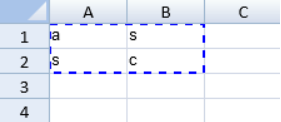

The user can cut, copy, and paste data in the widget.
The following conditions apply when using cut, copy, or paste:
You can display an indicator after copying or cutting cell values. Use the options.cutCopyIndicatorVisible property to specify the indicator and the options.cutCopyIndicatorBorderColor property to specify the border color. The following image displays an indicator after selecting a block of cells and pressing the Ctrl + C keys.

You can specify whether to copy and paste headers with Workbook options.copyPasteHeaderOptions.
Some styles can also be copied and pasted to and from Excel. For more information, refer to Copy Excel Objects to SpreadJS.
This example implements copy and paste with code.
| JavaScript |
Copy Code
|
|---|---|
window.onload = function() { var spread = new GC.Spread.Sheets.Workbook(document.getElementById("ss"), {sheetCount:3}); var sheet = spread.getActiveSheet(); sheet.setValue(0, 0, 1, GC.Spread.Sheets.SheetArea.viewport); sheet.setValue(1, 0, 2, GC.Spread.Sheets.SheetArea.viewport); sheet.setFormula(2, 0, "=A1+A2", GC.Spread.Sheets.SheetArea.viewport); sheet.setValue(0, 1, 3, GC.Spread.Sheets.SheetArea.viewport); sheet.setValue(1, 1, 4, GC.Spread.Sheets.SheetArea.viewport); sheet.setFormula(2, 1, "=B1+B2", GC.Spread.Sheets.SheetArea.viewport); var fromRange = [new GC.Spread.Sheets.Range(0, 0, 3, 2)]; var toRanges = [new GC.Spread.Sheets.Range(5, 0, 3, 2)]; $("#button1").click(function () { // Cut Paste Action spread.commandManager().execute({cmd: "clipboardPaste", sheetName: "Sheet1", fromSheet: sheet, fromRanges: fromRange, pastedRanges: toRanges, isCutting: true, clipboardText: "", pasteOption: GC.Spread.Sheets.ClipboardPasteOptions.all}); }); $("#button2").click(function () { spread.commandManager().execute({cmd: "clipboardPaste", sheetName: "Sheet1", fromSheet: sheet, fromRanges: fromRange, pastedRanges: toRanges, isCutting: false, clipboardText: "", pasteOption: GC.Spread.Sheets.ClipboardPasteOptions.all}); }); |
|
This example deactivates Clipboard actions by cancelling default cut, copy, and paste keys.
| JavaScript |
Copy Code
|
|---|---|
window.onload = function() { var spread = new GC.Spread.Sheets.Workbook(document.getElementById("ss"), {sheetCount:3}); var activeSheet = spread.getActiveSheet(); spread.commandManager().setShortcutKey(undefined, GC.Spread.Commands.Key.c, true, false, false, false); spread.commandManager().setShortcutKey(undefined, GC.Spread.Commands.Key.v, true, false, false, false); spread.commandManager().setShortcutKey(undefined, GC.Spread.Commands.Key.x, true, false, false, false); } |
|
This example cancels the paste action.
| JavaScript |
Copy Code
|
|---|---|
$(document).ready(function () { var spread = new GC.Spread.Sheets.Workbook(document.getElementById("ss"), {sheetCount:3}); var sheet = spread.getActiveSheet(); sheet.bind(GC.Spread.Sheets.Events.ClipboardPasting, function (e, args) { args.cancel = true; }); }); |
|